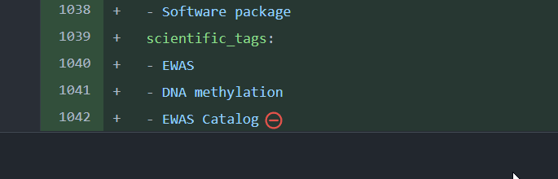

Miscellaneous
- Text files should end with a newline character (i.e., a blank line)
- If you see the following red icon at the end of a file on GitHub, simply press ↵ Enter at the end of the file (i.e., in this case after the
Catalog), resave, commit, and the red icon should be gone

- If you see the following red icon at the end of a file on GitHub, simply press ↵ Enter at the end of the file (i.e., in this case after the
- Python and R versions
The versions of Python and R in their respective OpenSAFELY Docker containers are (as of 1st December 2021):
- Python 3.8.10
- R 4.0.2
The Python and R code run within their respective Docker containers. Hence the version of Python and R used to run your analyses are the versions of Python and R in these Docker containers and not the versions of Python and R on your computer
To see the Python version number insert in your
study_definition.pyimport sys print(sys.implementation.version)To see the R version number insert into one of your R analysis scripts
print(R.version.string)